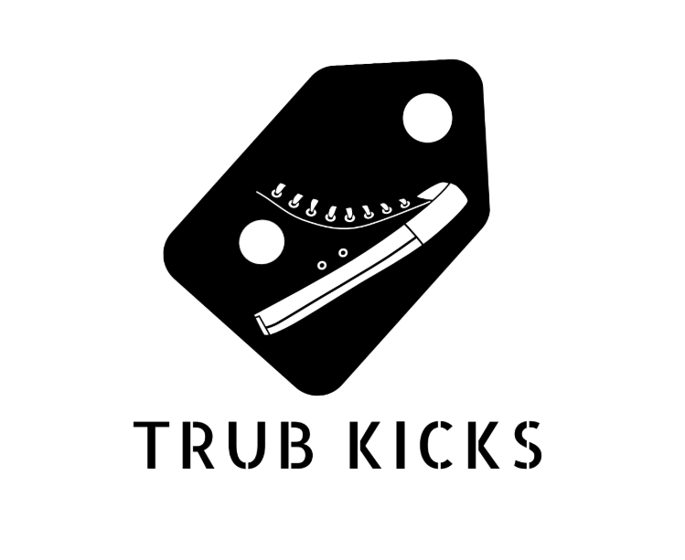
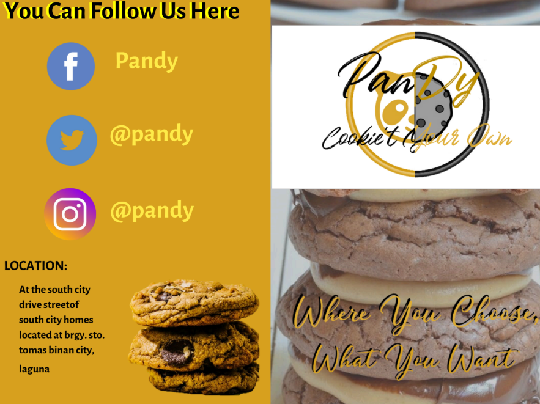
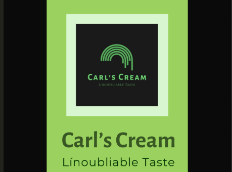
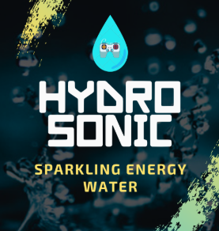
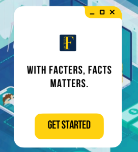

Skills & Expertise
Comprehensive skill set covering relationship management, technical support, and business operations
Relationship Management
- Client Relationship Management
- Customer Service & Escalation
- Client Communication & Follow-ups
- Client Onboarding & Training
- Proactive Problem-Solving
Technical Skills
- Zoho CRM Management & Administration
- HubSpot CRM Experience
- Web Development (HTML, CSS, JavaScript)
- Basic MySQL Database Management
- MS Office Suite Proficient
Business Operations
- Calendar & Schedule Management
- Email Handling & Inbox Organization
- Document Formatting & Data Entry
- Social Media Scheduling
- File Organization (Google Drive, Dropbox)
Specialized Skills
- Legal/Regulatory Compliance Support
- Report Generation & Analysis
- Multi-tasking & Priority Management
- Basic Graphic Design (Canva)
- Typing Speed: 60-70 WPM (98-100% accuracy)
Social Media Management
- Page & Community Management
- Content Creation & Scheduling
- Branding & Campaigns
- Engagement & Analytics
Web & Graphic Designing
- Branding & Logo Design
- Brochure & Social Media Graphics
- Web Design (Wix, HTML/CSS)
- Tools: Canva, Picsart, Publisher, Illustrator
Professional Experience
A proven track record of excellence across diverse industries and roles
Professional Certifications
Continuous learning and professional development to deliver exceptional value
Working as a Virtual Assistant
Alison (CPD Certified)
Comprehensive certification demonstrating proficiency in virtual assistant skills, client support, and remote work best practices. Covers essential VA competencies and industry standards.
View Certificate
Introduction to Zoho CRM
Alison (CPD Certified)
Professional certification in Zoho CRM management, client relationship tracking, and business process automation. Demonstrates advanced CRM administration skills.
View Certificate
Roles and Responsibilities of Virtual Assistants
Alison (CPD Certified)
Comprehensive certification covering the essential roles, responsibilities, and best practices for virtual assistants. Demonstrates deep understanding of VA industry standards and client service excellence.
View Certificate
Graphic Design Credentials
Showcasing creative works for clients and personal projects using a variety of design tools

Trub Kicks Social Media Design
Personal Business Project
Social media graphics for our small shoe reselling business page.
Tools: Picsart
View Work

Pandy Brochure
Client Project
Brochure design for a newly launched cookie business.
Tools: Microsoft Publisher
View Work

Carl's Cream Branding
Client Project
Branding and design for an ice cream business.
Tools: Microsoft Publisher, Canva
View Work

Hydro Sonic Branding
Client Project
Branding for a water refilling station, including logo design.
Tools: Canva, Microsoft Publisher, Adobe Illustrator (logo)
View Work

Fido Facters App Design
Academic Collaboration
Fact-checking application design for academic work.
Tools: Canva
View Work
Development Portfolio
A showcase of web applications, websites, and coding projects
PhilHealth Website
Full-Stack Project
A full-stack web application for PhilHealth member registration, dependent management, and secure account creation. Features robust CRUD, admin dashboard, PDF reporting, and a modern UI.
View Project
AI Prompt Generator Portfolio
AI/Frontend Project
A portfolio project demonstrating advanced prompt engineering and interactive web UI. Built with HTML and CSS, focused on creative AI prompt generation.
View Project
The Freedom Geek Portfolio
Web Portfolio
A portfolio website for The Freedom Geek, highlighting web development, automation, and virtual assistant services with a modern layout and project showcases.
View Project
Let's Connect
Ready to discuss how I can help your business grow and succeed
About Me
A relationship-driven professional passionate about helping businesses grow through exceptional client support and technical expertise
Social Media Management
Pages and campaigns managed, including content creation, branding, and community engagement